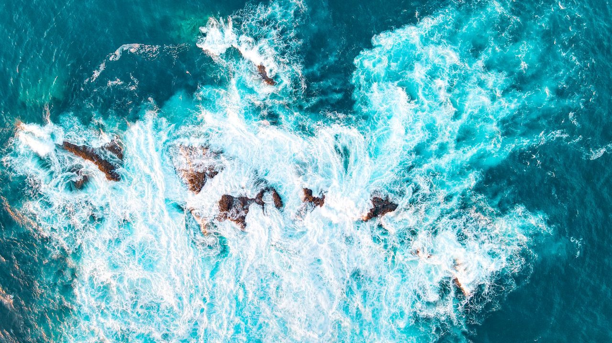

Dünya’yı “Mavi Gezegen” yapan okyanuslar, yüzeyin yüzde yetmiş birini kapliyor ve toplam su hacminin yüzde doksan yedisini barındırıyor. İnsan türü Mars’ı keşfetmeden önce kendi gezegeni üzerindeki denizlerin derinliklerini keşfetmeyi henüz tamamlayamadı. Mariana Çukuru’nun tabanı, Ay yüzeyinden daha az ziyaret edilmiştir.
Okyanuslar yalnızca su değildir; iklimi düzenleyen, oksijen üreten, milyonlarca türe ev sahipliği yapan ve insanlığın besin, enerji ile ticaret altyapısını taşıyan karmaşık bir sistemdir. Ancak bu sistem, insan faaliyetlerinin yarattığı baskılar altında tarihinin en kritik dönüm noktasındadır.
Dünya’nın Beş Okyanusu
Tarihsel olarak dört okyanus tanımlanırken, Uluslararası Hidrografi Örgütü (IHO) 2021 yılında Güney Okyanusu’nu (Antarktika Okyanusu) beşinci okyanus olarak resmî statüye kavuşturdu.
Pasifik Okyanusu: Yüzey alanı yaklaşık 165 milyon km² ile dünyanın en büyük okyanusudur; Dünya’nın toplam yüzey alanının üçte birini kaplar. En derin noktası, tüm dünya okyanuslarının da en derin noktası olan Mariana Çukuru’dur (11.034 metre). Pasifik; Japonya, Endonezya, Filipinler ve Peru gibi çok farklı kültürleri çevreler, “Ateş Çemberi” (Ring of Fire) tektonik kuşağına ev sahipliği yapar.
Atlantik Okyanusu: Yaklaşık 106 milyon km². Avrupa ve Afrika kıyıları ile Amerika kıtaları arasında köprü kurar. Ortasında uzanan Orta Atlantik Sırtı, dünyanın en uzun dağ zinciridir (yaklaşık 16.000 km). Kuzey Atlantik Derin Suyu (NADW) global termohalin sirkülasyonunun itici gücüdür; bu “okyanus bandı” dünya iklimini düzenler.
Hint Okyanusu: Yaklaşık 70 milyon km². Muson iklimiyle şekillenen ve dünyanın en sıcak okyanusu olma özelliğini taşıyan bu okyanus, Hint Yarımadası, Doğu Afrika ve Güneydoğu Asya arasındaki ticareti binlerce yıldır yönetmiştir.
Arktika (Kuzey Buz) Okyanusu: Yaklaşık 14 milyon km² ile en küçük okyanus. Kuzey Kutubu’nu çevreler ve yıl boyunca büyük bölümü buz örtüsüyle kaplıdır. İklim değişikliği nedeniyle bu örtü hızla erimektedir: NASA verilerine göre Arktika deniz buzu alanı 1979’dan bu yana on yılda yaklaşık yüzde on üç oranında azalmaktadır.
Güney (Antarktika) Okyanusu: 60° güney enleminin güneyinde yer alan bu okyanus Antarktika kıtasını çevreler. Antarktik Sirümpolar Akıntısı (ACC), dünyanın en güçlü okyanus akıntısıdır ve küresel ısı ile besin dağılımında kritik rol oynar.
Mariana Çukuru: Bilinmeyenin En Derini
Pasifik’te, Filipinler’in doğusunda yer alan Mariana Çukuru, okyanus tabanının en derin noktasıdır. Challenger Deep olarak adlandırılan bu noktanın derinliği 10.994 metre olarak ölçülmüştür (NOAA, 2010). Buraya yerleştirilseydi Everest Dağı hâlâ 2 km su altında kalırdı.
İlk insanlı dalmayı 1960 yılında Jacques Piccard ve Don Walsh, Trieste batiskriyle gerçekleştirdi. 2012’de yönetmen James Cameron tek başına Deepsea Challenger ile bu noktaya ulaştı. 2019’da Victor Vescovo özel yapım DSV Limiting Factor aracıyla 10.928 metreye inerek yeni bir dalış rekoru kırdı. Hâlâ bu derinlikte birden fazla türde amfipod, polisaet solucanı ve tek hücreli organizma keşfedilmektedir.
Deniz Biyopolilikçiliği: Yaşamın Anahtarı
Okyanuslar, Dünya’daki tüm yaşam habitatlarının yaklaşık yüzde doksanadokuzunu oluştururken, keşfedilen deniz türlerinin sayısı 240.000 civarındadır. Bilim insanları toplam deniz türlerinin 700.000 ile 1 milyon arasında olduğunu tahmin etmektedir. Bu fark, okyanusların ne kadar az incelendiğini gözler önüne serer.
Mercan resifleri, deniz yüzeyinin yalnızca yüzde ikisini kaplamalarına karşın, tüm deniz türlerinin yaklaşık yüzde yirmi beşine ev sahipliği yapar. “Denizin yağmur ormanları” olarak bilinen bu ekosistemler, balık avlanmasından turizme, fırtına korumasından yeni ilaç moleküllerine kadar yıllık 375 milyar dolar değerinde hizmet üretmektedir (Reef Check Vakfı, 2022).
“Okyanus olmadan nefes alınamaz. Dünya’nın oksijeninin en az yarısı denizlerdeki fitoplanktonlardan gelir.” — Sylvia Earle, NOAA Baş Bilimcisi ve Ulusal Coğrafya Kâşifi
Okyanus Akıntıları ve Küresel İklim
Okyanuslar, Güneş’ten gelen ısının yaklaşık yüzde doksanını emer ve bu ısıyı küresel ölçekte yeniden dağıtır. Termohalin sirkülasyon (THC), suyun tuzluluk ve sıcaklık farklılıklarından kaynaklanan yoğunluk farkıyla hareket ettiği bir “büyük band” oluşturur; bu band tüm okyanusları birbirine bağlar.
Kuzey Atlantik’te yüzey suları soğuyup tuzlu hâle gelince dibe batar ve güneye doğru derin bir akıntı oluşturur. Bu mekanizma (AMOC: Atlantik Meridyonel Devridaim Sirkülasyonu) Avrupa’nın ılıman iklimini sağlar. Bilim insanları AMOC’un zayıflamasının Kuzey Avrupa’da kış sıcaklıklarını dramatik biçimde düşürebileceği ve Sahra yağış rejimini değiştirebileceği konusunda uyarıyor (Science, 2023).
Okyanus Asidifikasyonu: Sessiz Kriz
Sanayi devrimi öncesinde okyanus yüzeyinin pH değeri yaklaşık 8,2 iken, günümüzde 8,05–8,1’e gerilemiştir. Bu değişim yaklaşık yüzde yirmi altı asidite artışına karşılık gelir. Okyanuslar, atmosfere salınan CO₂’nin yaklaşık yüzde otuzunu emer; bu süreçte karbonik asit oluşur ve su asileşir.
Artan asidite, karbonатlı kabuk ve iskelet oluşturan mercan, istiridye, midye ve plankton türlerini doğrudan etkiler. Mevcut eğilim sürdüğünde 2100 yılına kadar okyanus pH’ının 7,7–7,8’e düşeceği hesaplanmaktadır (IPCC AR6, 2021).
Plastik Kirliliği: Okyanuslardaki İnsan İzi
Bugün okyanuslarda 150–170 milyon ton plastik bulunduğu tahmin edilmektedir. Her yıl 8 milyon ton yeni plastik denizlere karşışmaktadır. “Büyük Pasifik Çöp Yığını” (Great Pacific Garbage Patch), Fransa yüzeyinin yaklaşık iki katı büyüklüğünde ve ağırlıklı olarak mikroplastiklerden oluşmaktadır. Bu parçacıklar balık ve deniz kuşlarının bağırsaklarında, hatta insan kanında tespit edilmiştir (Heindler ve diğerleri, Environmental Pollution, 2017).
Hydrothermal Kaynaklar: Güneşsiz Yaşam
1977 yılında Alvin denizaltısıyla yapılan bir keşif, biyoloji anlayışımızı kökten sarstı: Galapagos Açığı’nda, derin deniz tabanında sıcak su fışkıran hydrothermal kaynakların (siyah bacalar) etrafında güneş ışığına gerek duymayan canlı ekosistemler keşfedildi. Kemosintez yapan bakterileri temel alan bu ekosistemler; tüp solucanları, körleşmiş yen geçler ve devasa istiridyelerden oluşmaktadır. Bu keşif, “yaşam yalnızca güneş enerjisiyle mümkündür” dogmasını yıktı ve Jüpiter’in uydusu Europa’nın altındaki buzul altı okyanusunda yaşam arayışına bilimsel zemin hazırladı.
Sonuç: Okyanus Bir Sistemdir
Okyanuslar, iklim sistemi, besin üretimi, oksijen dengesi ve biyopolilikçilik açısından Dünya’nın en kritik bileşenidir. Sağlıklı bir okyanus sistemi olmadan insan medeniyetinin sürdürülebilirliği mümkün değildir.
İnsan türü okyanusların yalnızca yüzde yirmisini keşfetmiştir. Önümüzdeki on yıl, otonom denizaltılar ve yapay zekâ destekli haritalama sayesinde bu oran hızla artacak. Derinlikte bizi ne bekliyor bilmiyoruz; ama biliyoruz ki bilmemek, korumamamızın gerekçesi olamaz.